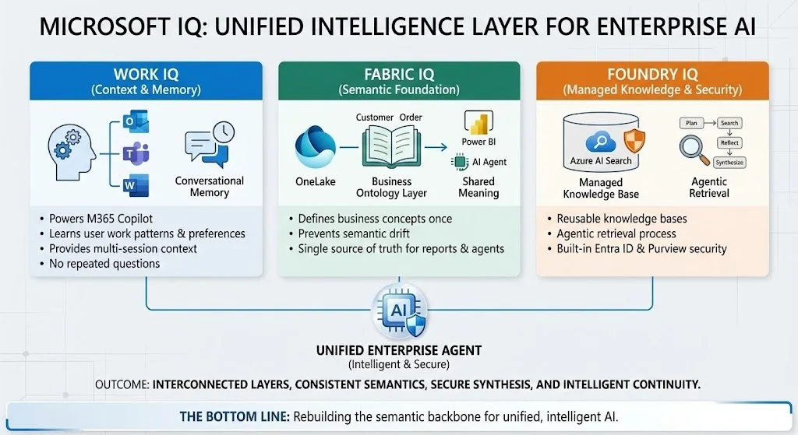
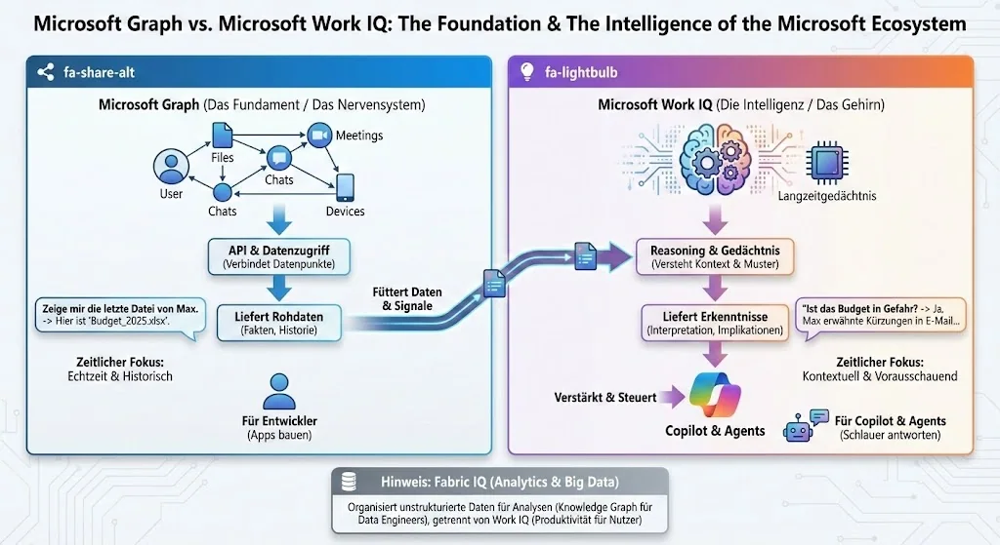

Microsoft IQ Explained: Making Enterprise AI Agents Work
Microsoft IQ covers Work IQ, Fabric IQ and Foundry IQ. This article explains their roles in Microsoft 365, business data and knowledge retrieval, and where they fit in an AI agent architecture.
How Microsoft IQ Makes Enterprise AI Agents Work

Building AI agents involves connecting data sources, checking access and evaluating retrieved information. The choice of knowledge layer affects each of these tasks.
Microsoft presented IQ at Ignite 2025. It spans Microsoft 365, Fabric and Microsoft Foundry. A document manager is one example of an application that needs a defined retrieval path.
Quick answer: Microsoft IQ is Microsoftâs umbrella intelligence layer for enterprise agents: Work IQ represents work context, Fabric IQ adds governed business semantics, and Foundry IQ retrieves and grounds knowledge for custom agents. These layers provide context for models and agents.
Last verified: July 22, 2026
The Three Pillars of Microsoft IQ
The three layers address different sources of context:
Work IQ powers Microsoft 365 Copilot. It understands how you work, who you work with, and what content youâre collaborating on. Itâs built on your emails, files, meetings, and chats â plus your preferences, habits, and work patterns. It uses that information to provide context and memory across interactions.
Fabric IQ brings semantic meaning to your data platform. Itâs essentially a business ontology layer that sits on top of OneLake. Define âCustomer,â âOrder,â or âAssetâ once, and every Power BI report, notebook, and AI agent speaks the same language. Agreeing on these definitions helps teams interpret the same measure consistently.
Foundry IQ is a managed knowledge system built on Azure AI Search that grounds your AI agents. Instead of building custom RAG pipelines for every project, you get reusable knowledge bases accessible through a single API. You can dig into the architecture in the official Microsoft Learn documentation.
How the layers fit an agent workflow
An agent workflow may need work context, business definitions and document retrieval together.
Imagine building an agent that needs to answer: âHow is our pipeline trending against last yearâs Q4, and are there any delays flagged in customer conversations?â
With traditional approaches, youâd need to:
- Query your CRM database
- Search through SharePoint documents
- Parse Teams messages
- Somehow reconcile different definitions of âpipelineâ
- Check sources and calculations
With the unified Microsoft IQ layer, your agent can query Fabric IQ for structured pipeline data, tap into Work IQ for conversation signals, and use Foundry IQâs agentic retrieval to synthesize it all â with consistent semantic understanding throughout.
Foundry IQ and agentic retrieval
Foundry IQ uses agentic retrieval to plan searches and combine retrieved information:
- Plans the query â Understands what information is actually needed
- Iteratively searches â Hits multiple knowledge sources
- Reflects on results â Determines if more searching is needed
- Synthesizes findings â All while respecting user permissions
Before using a knowledge source, check its supported identity and permission controls. Test access with users who have different rights, and confirm how sensitivity labels affect the retrieval path you plan to use.
Work IQ: Copilot Gets Memory
The Work IQ piece solves something thatâs bothered me about Copilot: context continuity. Through what Microsoft calls âconversational memory,â Copilot can now remember context and important details across sessions.
It uses your work profile, instructions, preferences, and insights from past chats. You stay in control â you can review or delete these memories anytime. But the practical impact is that Copilot stops asking you the same questions over and over.
Work IQ also powers model routing. Based on your prompt and intent, it can select the right model for the task â whether thatâs GPT-5, Claude from Anthropic, or specialized fine-tuned models. The available model choices depend on the feature and your organisationâs configuration.
Fabric IQ: The Semantic Foundation
For those of us whoâve dealt with the chaos of enterprise data, Fabric IQ addresses a fundamental problem: semantic drift. When different teams define the same business concept differently, your AI agents inherit that confusion.
The new Ontology item in Fabric (now in public preview) lets you:
- Define entity types, properties, and relationships once
- Bind these to actual data sources
- Automatically build a navigable graph
- Share definitions across all analytics, apps, and agents
For example, an ontology can record what âCustomerâ means and how it relates to other entities. The agent can use those definitions when working with the connected data.
Getting Started with Microsoft IQ
Hereâs what Iâd recommend if you want to explore Microsoft IQ:
Start with Fabric IQ if youâre already in the Fabric ecosystem. The Ontology item is in public preview â define a few core business entities and see how they propagate through your reports and data agents.
Check out Foundry IQ if youâre building custom agents. The preview gives you access to knowledge bases and agentic retrieval without the RAG infrastructure headache.
Work IQ features are rolling out through Copilot updates. The conversational memory is available through the Frontier program if you have access.
Microsoft Graph vs. Work IQ: Foundation vs. Intelligence
Microsoft Graph and Work IQ serve different roles in a Microsoft 365 application.
Microsoft Graph is the Foundation â think of it as the nervous system of Microsoft 365. It connects all your data points: Users, Files, Meetings, Chats, Devices. Through its API, you get raw data access â facts and history. When you query âShow me the last file from Max,â Graph returns Budget_2025.xlsx. Thatâs it.
Graph is built for developers who want to build apps. Itâs excellent at what it does: providing a unified API to access Microsoft 365 data. But itâs fundamentally a data retrieval system.
Work IQ is the Intelligence Layer â think of it as the brain sitting on top of Graph. It doesnât just retrieve data; it understands context and patterns. It has long-term memory of your work habits and preferences. When you ask âIs the budget at risk?â, Work IQ can answer: âYes, Max mentioned cuts in an email last week, and the Q3 projections show a 15% shortfall.â
The key differences:
| Aspect | Microsoft Graph | Work IQ |
| Role | Foundation / Nervous System | Intelligence / Brain |
| Output | Raw Data (Facts, History) | Insights (Interpretation, Implications) |
| Time Focus | Real-time & Historical | Contextual & Predictive |
| Built For | Developers (Building Apps) | Copilot & Agents (Smart Responses) |
Work IQ feeds on Graph data, adds reasoning and memory, and powers Copilot and your custom agents. Graph is still there â itâs not going anywhere. Work IQ just makes it smarter.

And yes, Fabric IQ sits alongside this for Analytics and Big Data use cases â organizing unstructured data for analysis through knowledge graphs, separate from the productivity focus of Work IQ.
Plan a first use case
Start by identifying the data and context your agent needs. Map each source to a supported interface and check the required licences and permissions.
Define the business concepts your use case depends on and record the relevant metadata in SharePoint. Then check how the required layers connect in your environment.
Test the retrieval path with a small set of documents and a user whose access you can verify. Record the answer, its sources and any missing information before expanding the scope.
Related reading: Frontier transformation at Epic Fusion.